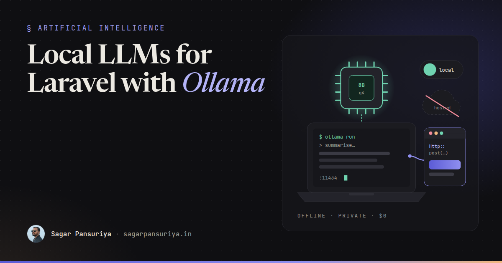
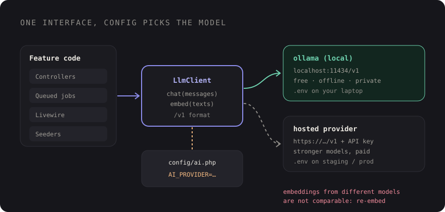

Local LLMs for Laravel Development with Ollama: Private, Offline and Free to Iterate


Picture the first week of building an AI feature. You're tweaking a prompt, reloading the page, tweaking again. You're running a seeder that summarises two hundred fake support tickets. A test suite hits the model on every run. Every one of those calls goes to a hosted API, costs a little money, needs a network connection, and sends whatever data you're testing with to a third party.
For a lot of that work, you don't need a frontier model. You need a model that speaks the same API, runs on your laptop and answers in a reasonable time. That's what Ollama gives you: a small local server that downloads open-weight models and exposes them over HTTP.
This post covers why it's worth setting up, how to pick a model your machine can handle, the two APIs Ollama offers, how to call them from Laravel, how to switch between local and hosted providers with config, and where local models fall short.
Why run a model locally at all
- Privacy. Prompts and data never leave your machine. That matters when you're developing against a copy of real data, or when a client's contract says customer data can't go to third-party AI services during development.
- Cost. Local calls are free after the download. Seeders, reruns and test loops stop being something you think about.
- Offline. Trains, flights, flaky coworking Wi-Fi. The feature still works.
- Iteration speed. No rate limits, no API keys to share with the team, no waiting for a billing account.
The honest trade-off: local models are smaller and less capable than the best hosted ones. I treat them as a development and prototyping tool first, and a production option only when a specific task has been tested and proven to work well with one.
Installing Ollama and pulling a model
Install Ollama from its official website (there are installers for
macOS and Windows, and an install script for Linux). It runs a local server on port
11434. Then pull a model and try it in the terminal:
ollama pull llama3.2 # a small general-purpose model
ollama pull nomic-embed-text # an embedding model
ollama run llama3.2 "Summarise the Laravel request lifecycle in 3 bullets"
ollama list # what you have locallyModel names and versions change often, so browse the model library on the Ollama site for what's current. The ones above are just a reasonable starting pair.
Picking a model size for your hardware
Model size is measured in parameters (3B, 8B, 14B and so on), and the thing that limits you is memory. Ollama models are usually quantised, which shrinks them a lot at a small cost in quality. As a very rough rule of thumb for the common 4-bit versions, budget a bit over half a gigabyte of memory per billion parameters, plus some headroom for the context window.
| Your machine (roughly) | Comfortable model size | Good for |
|---|---|---|
| 8 GB RAM, no GPU | 1B to 3B | Classification, short summaries, wiring things up |
| 16 GB RAM or Apple Silicon | 7B to 8B | Most dev work, drafting, extraction |
| 32 GB+ or a GPU with lots of VRAM | 14B and up | Better reasoning, longer outputs |
Treat this as a starting point, not a spec. Apple Silicon Macs do well because the GPU shares system memory. On other machines, a model that fits in GPU memory is dramatically faster than one that spills onto the CPU. If responses crawl, drop a size before you blame your code.
Ollama's two APIs
Ollama exposes its own native API under /api, and an OpenAI-compatible API under
/v1. The native one gives you Ollama-specific options. The compatible one is the
reason this setup is so useful: code written for the OpenAI chat completions format can point
at Ollama by changing the base URL.
The native chat endpoint from Laravel
use Illuminate\Support\Facades\Http;
$response = Http::timeout(120)->post('http://localhost:11434/api/chat', [
'model' => 'llama3.2',
'messages' => [
['role' => 'system', 'content' => 'You write concise release notes.'],
['role' => 'user', 'content' => $commitLog],
],
'stream' => false,
'options' => [
'temperature' => 0.2,
'num_ctx' => 8192, // context window, see the note below
],
]);
$notes = $response->throw()->json('message.content');Two things trip people up. First, set stream to false unless you're
handling a stream, because streaming is the default and you'll get newline-delimited JSON
chunks instead of one object. Second, the default context window is smaller than most hosted
models. If you send a long document and the model seems to ignore the beginning, raise
num_ctx (it costs memory). Also give local calls a generous timeout: the first
request after a pull includes loading the model into memory.
The native API also accepts a format field, either "json" or a JSON
schema, which is handy for extraction tasks.
Swapping local and hosted providers with config
The goal is that the rest of your app never knows which model it's talking to. Define a small interface, one implementation that speaks the OpenAI-compatible format, and let config decide where it points.

// config/ai.php
return [
'default' => env('AI_PROVIDER', 'ollama'),
'providers' => [
'ollama' => [
'base_url' => env('OLLAMA_URL', 'http://localhost:11434/v1'),
'api_key' => 'ollama', // required by the format, ignored by Ollama
'chat_model' => env('OLLAMA_CHAT_MODEL', 'llama3.2'),
'embedding_model' => env('OLLAMA_EMBEDDING_MODEL', 'nomic-embed-text'),
'timeout' => 120,
],
'hosted' => [
'base_url' => env('AI_HOSTED_URL'),
'api_key' => env('AI_HOSTED_KEY'),
'chat_model' => env('AI_HOSTED_CHAT_MODEL'),
'embedding_model' => env('AI_HOSTED_EMBEDDING_MODEL'),
'timeout' => 30,
],
],
];The client is a thin wrapper around Laravel's HTTP client:
// app/Ai/OpenAiCompatibleClient.php
class OpenAiCompatibleClient implements LlmClient
{
public function __construct(private array $config) {}
private function http(): PendingRequest
{
return Http::baseUrl($this->config['base_url'])
->withToken($this->config['api_key'])
->timeout($this->config['timeout'])
->acceptJson();
}
public function chat(array $messages, float $temperature = 0.2): string
{
return $this->http()->post('chat/completions', [
'model' => $this->config['chat_model'],
'messages' => $messages,
'temperature' => $temperature,
])->throw()->json('choices.0.message.content');
}
public function embed(array $texts): array
{
return $this->http()->post('embeddings', [
'model' => $this->config['embedding_model'],
'input' => $texts,
])->throw()->collect('data')->pluck('embedding')->all();
}
}Bind it once in a service provider:
$this->app->singleton(LlmClient::class, function () {
$provider = config('ai.default');
return new OpenAiCompatibleClient(config("ai.providers.{$provider}"));
});Now AI_PROVIDER=ollama in your local .env and
AI_PROVIDER=hosted in staging and production. Controllers, jobs and Livewire
components just ask for LlmClient. In tests, bind a fake implementation or use
Http::fake(), so your suite doesn't depend on either.
If you'd rather not maintain this yourself, there are Laravel packages that wrap several providers, Ollama included, behind one API. The idea is the same. What matters is that provider choice lives in config, not in your feature code.
If Laravel runs in Docker
With Sail or another Docker setup, localhost inside the container is the
container itself, not your machine. Point OLLAMA_URL at
http://host.docker.internal:11434/v1 instead (on Linux, the container needs a
host-gateway mapping for that name). Ollama can also be told to listen on other
interfaces with the OLLAMA_HOST environment variable, but be careful not to expose
it to your whole network by accident.
Embeddings locally
Embeddings are one of the best fits for local models. Embedding models are small, fast, and
you often need to embed a lot of text while developing search or retrieval features. With the
client above, local embeddings are just app(LlmClient::class)->embed($chunks).
The one rule you can't break: vectors from different embedding models are not comparable, and they often have different dimensions. If you index your docs locally with one model and query in production with another, search results will be garbage (or your vector column will reject them). Store the embedding model name next to each vector, and re-embed everything when you switch. I went deeper into the storage side in building a RAG docs assistant with pgvector.
Where local models fall short
- Reasoning and instruction following. Small models lose track of complex, multi-step instructions faster than frontier models. Prompts that work perfectly on a hosted model may need to be simpler locally.
- Tool calling and structured output are less reliable on smaller models. Validate everything you parse, which you should be doing anyway.
- Context length. Long contexts cost a lot of memory on a laptop.
- Speed under load. Fine for one developer. Not a production server unless you plan the hardware for it.
- Behaviour drift between providers. This is the big one. A prompt tuned against a local model is not tuned for your production model, and the other way round. Before shipping, run the same test cases against the model you'll actually deploy. That's exactly what an eval suite for your app is for.
A setup checklist
- Install Ollama and pull one small chat model and one embedding model.
- Pick a model size that fits comfortably in memory. Drop a size if it's slow.
- Use the OpenAI-compatible
/v1endpoint so one client works for every provider. - Put provider, base URL, keys and model names in
config/ai.php, driven by env. - Bind an
LlmClientinterface; never call a provider directly from feature code. - Use generous timeouts locally, and set
num_ctxfor long inputs on the native API. - Store the embedding model name with every vector, and re-embed when it changes.
- Run your evals against the production model before you ship.
Set this up once, and AI features stop being the part of the codebase that needs a credit card, a network connection and a data-processing conversation before anyone can work on them. You develop locally, privately, as often as you like, and flip one env variable when it's time to test against the real thing.
Discussion